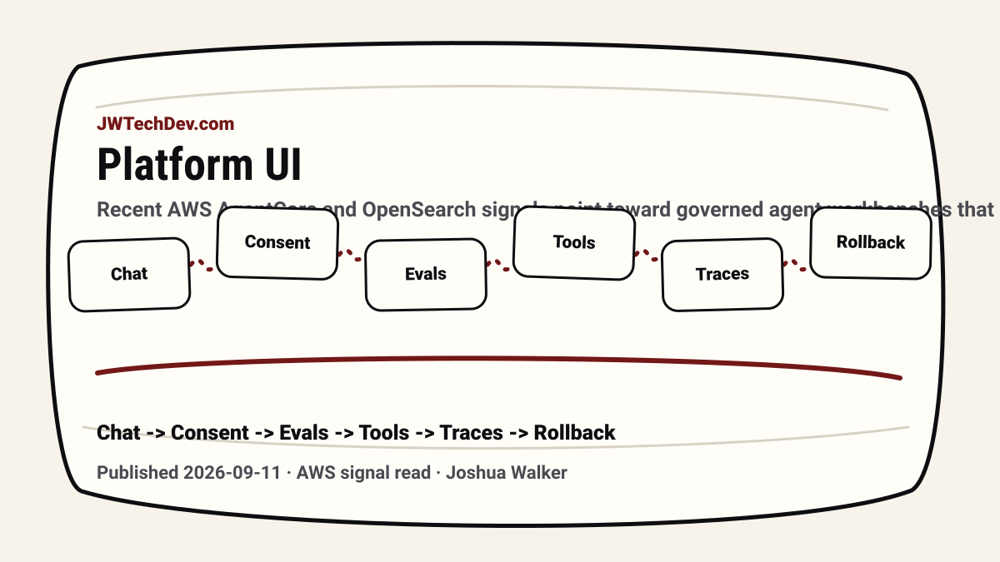

The next AI platform UI is not a chat box
Recent AWS AgentCore and OpenSearch signals point toward governed agent workbenches that show consent, evals, runtime, tool permissions, traces, cost, owner, and rollback state.

Quick answer
The next useful AI platform interface will be a governed workbench, not just a chat box. Chat can stay, but the production UI needs to show the operating state around the agent.
The useful signal
When you put the recent AWS signals together, the pattern is hard to miss. AgentCore is adding evaluation support, consent and identity flows, runtime migration guidance, registry concepts, gateway controls, and observability patterns. OpenSearch MCP Apps bring evidence into the assistant surface.
The broad read is simple: the next AI platform UI cannot be only a chat box.
Chat is not enough for production work
Chat is useful for expression. It is a terrible place to hide operational truth. A production agent workflow needs to show what the agent can access, which tools it used, what it is allowed to write, what evals cover the behavior, what consent exists, what the cost looks like, and who owns the capability.
If those facts are hidden, the interface feels magical until something breaks. Then everyone asks where the logs are, who approved the action, what data was touched, and how to roll it back.
The workbench fields that matter
The useful platform surface should expose runtime, framework, owner, deployment stage, eval coverage, consent state, tool permissions, allowed data classes, approval gates, trace evidence, cost policy, and rollback handle.
Those fields are not just for engineers. They are how product owners, security teams, operators, and builders can share the same mental model of what the agent is allowed to do.
Evidence belongs in the workflow
OpenSearch MCP Apps make this especially clear. If the agent claims it found a root cause, the human should see the trace, service map, or log pattern near the claim. The interface should reduce context switching, not create another invisible reasoning layer.
This same evidence pattern applies outside observability. If the agent suggests a code change, show the diff and tests. If it recommends a customer action, show the policy and approval state. If it summarizes data, show the source.
JWT read
The winning AI platform UI will feel less like a chatbot and more like an operations console for agentic work. It will still let people talk to the system, but it will also show the contract around the system.
That is the shift builders should study: consent, evals, identity, traces, tools, cost, approvals, and rollback are becoming product UX. The serious AI interface is the one that makes those pieces visible.
Sources checked
Want the starter kit?
Grab the free JWTechDev.com starter kit if you want a practical way to connect AWS, AI workflows, and approval gates.
Get resources